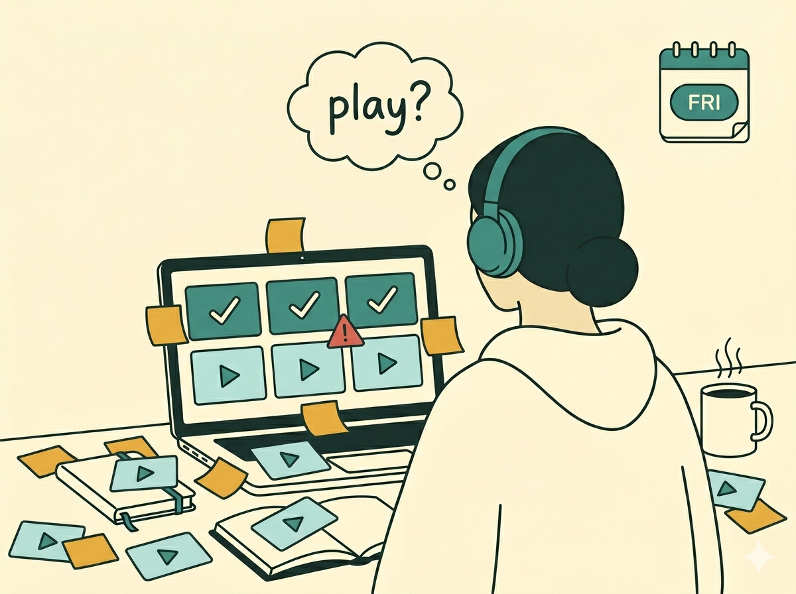
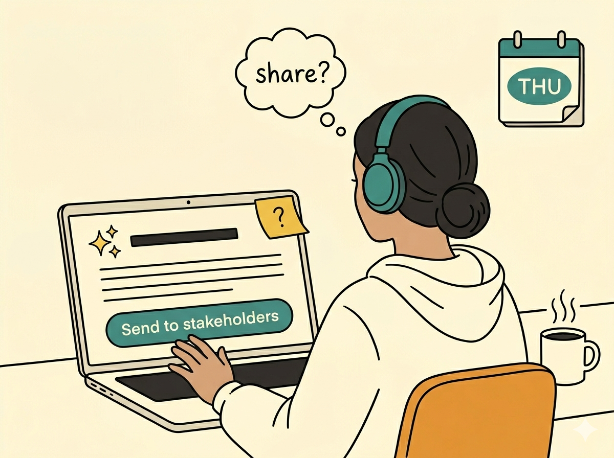
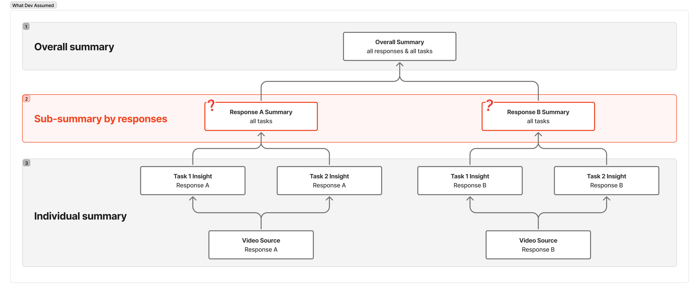
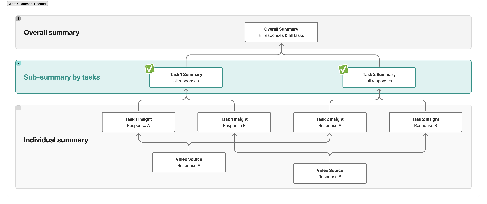
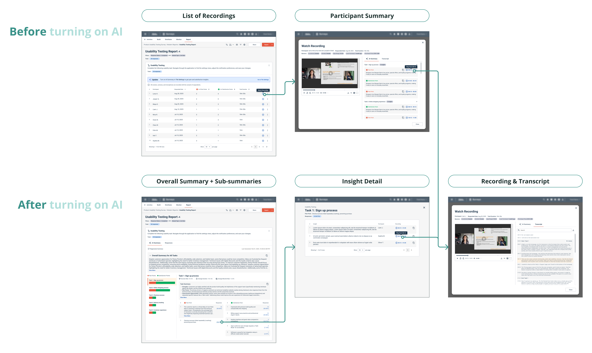

Research Community Platform · AI
Multi-Video Insights
Turning hours of video into minutes of insight — and bringing design upstream of engineering with customer evidence.

The final reporting view, starting with overall summary.
Researchers were drowning in unmoderated interview videos and transcripts, with no efficient way to surface patterns or opportunities for the next iteration.
Ran feedback sessions with power users to validate the right format for AI-generated video insights, then used that evidence to redirect engineering to a user-grounded backend structure.
Avoided backend rework, launched on a structure validated by customers, and received highly positive reception during prototype walkthroughs.
Researchers are Suffering from...
Before AI: drowning in video
Forty unmoderated sessions land in the queue.

Deadline is coming. Keep watching the remaining video?
After AI: can I trust the output?
Export the videos & transcripts, paste into AI, prompt for themes — and not sure if it hallucinates.

The AI summary looks clean — but is it safe to share?
Before AI, the bottleneck was time. After AI, the bottleneck is trust. Researchers need both solved at once — or the speed isn't worth it.
In customer interviews, the pattern is consistent: researchers have been ready to let AI do the heavy synthesis — what they want back is speed, scale, and a fast way to spot-check before the readout went out.
But efficiency alone isn't enough. To defend an AI-detected insight to a stakeholder, researchers need to trace it back to the video it comes from. In short, speed for researchers; traceability for both researchers and their stakeholders.
Changing the Starting Point
Engineering got out ahead of product and design, and asked us to fit the UI to their backend structure. Rather than comply, I partnered with the PM on targeted customer calls and focused on a narrow question: how do researchers actually consume qualitative findings? What do they skim first? What do they drill into? What do they trust enough to share?

The structure engineering assumed is built for backend convenience, not researcher's mental model.

The structure validated in customer calls — overall summary first, drill to task insight, drill to source.
We brought the verified design back to the dev team and walked through the customer evidence beat by beat. I also called out the correct format for the AI-generated summary, ensuring the backend output matched what researchers actually needed to see. The backend was retargeted to the user-validated structure without delaying the launch.
With evidence, not opinions — we brought design upstream of engineering.
Designing the Pattern
From here, the design problem was twofold: serve two different video question types with one coherent pattern, and embed it into the current reporting workflow.
One reporting pattern for two video question types
The platform supports two video-based question types: unmoderated usability testing (participants move through a series of tasks) and AI interviewer (a conversational AI conducting the interview based on pre-defined topics).
Different formats but similar underlying data shape. Usability testing organizes findings by task; AI interviewer organizes them by topic and key question. Both need the same reporting hierarchy: an overall summary at the top, sub-summaries at the task or topic level, and a traceable path back to the source clip. I designed to that shared structure once, then layered type-specific differences on top.
A 3-tier drill-down，tracing back to the source
- Overall Summary — AI-synthesized takeaways across all videos in the report.
- Insight Detail — Supporting evidence backing a specific AI-generated insight.
- Recording & Transcript — The raw moment that surfaced the insight, one click away.
